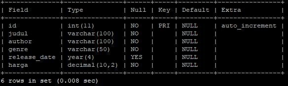

Membuat database dan tabel
membuat database...
CREATE DATABASE buku;
kita lihat apakah sudah berhasil membuat database...
SHOW DATABASES;
jika database sudah ada...
USE buku;
selanjutnya membuat tabel didalam database buku ...
CREATE TABLE list_buku(
id INT PRIMARY KEY AUTO_INCREMENT,
judul VARCHAR(100) NOT NULL,
author VARCHAR(100) NOT NULL,
genre VARCHAR(50) NOT NULL,
release_date YEAR,
harga DECIMAL(10,2) NOT NULL
);
selanjutnya cek apakah tabel sudah terbuat dengan benar, kalau benar harusnya seperti ini strukturnya...
DESCRIBE list_buku;

membedah struktur tabel list_buku...
filed id = tipe data INT atau integer / bilangan bulat. maksimal nilai yang bisa ditampung sampai 2milyar
banyak yang mengira int(11) ini maksimal angka 11 digit seperti 99.999.999.999 padahal bukan seperti itu
jadi saran saya abaikan saja (11) ini, ingat saja bilangan bulat
PRIMARY KEY secara sederhana bisa dianggap kode yang membedakan setiap ROW / RECORD pada tabel, walau secara teknis tidak wajib tapi secara praktek real PRIMARY KEY dibutuhkan setiap tabel
AUTO_INCREMENT intinya menambah satu nilai secara otomatis dari nilai sebelumnya, dalam hal ini nilai field id pada tabel list buku jika ada RECORD baru
VARCHAR singkatan dari VARIABLE CHARACTER ~ digunakan pada saat panjang data berbeda beda seperti nama seseorang, (100) menandakan maksimal panjang nama 100 karakter
NOT NULL intinya field yang mempunyai NOT NULL wajib ada isinya, jika pada saat INSERT tidak ada nilai yang dimasukan akan error, kecuali ada settingan nilai default
YEAR ini tipe data format angka(bukan string) yang menyimpan 4 digit angka yang bernilai 1 byte dari tahun 1901 - 2155
DECIMAL ya sesuai namanya ini tipe data bilangan desimal cocok digunakan saat ingin menerapkan nominal harga
DECIMAL(10,2) memaksudkan maksimal 8 digit angka dengan dua angka di belakang koma, berarti angka maxnya 99999999,99
tapi pada saat penulisan di sql tanda ,(koma) harus diganti dengan tanda . (titik)
Mari kita lanjut dengan insert data pada tabel list_buku, nantinya data yang masuk ini disebut ROW / RECORD...